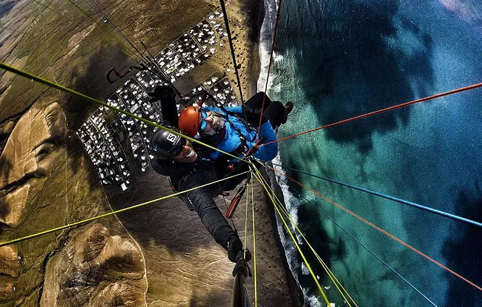
Il team Lavafly vanta un'esperienza ventennale con priorità assoluta nella sicurezza del cliente insieme alla ricerca del massimo divertimento. Ogni uscita è sicura fino all'ultimo secondo. L'attrezzatura viene controllata quotidianamente e sempre aggiornata, un po' come il programma TUV per gli autoveicoli. Una volta arrivati al punto di partenza, inizieremo con i preparativi per il decollo. Completate tutte le procedure di sicurezza, se le condizioni meteorologiche saranno corrette e approvate dal pilota, la tua avventura nel cielo inizierà dopo pochi istanti. Normalmente decolliamo sfruttando i venti delle Isole Canarie, pochi passi insieme e ... inizieremo a volare come uccelli.
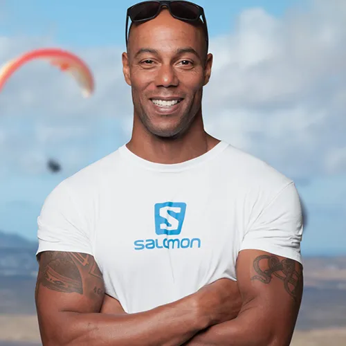
Con 22 anni di esperienza di volo. Certificato internazionale di istruttore e pilota di tandem. Ex atleta professionista, ora residente alle Isole Canarie, ha volato per 10 anni nell'arcipelago.
"Cosa c'è di più bello nella vita che avere passione e amore per il mio lavoro e condividerlo ogni giornata con i miei ospiti"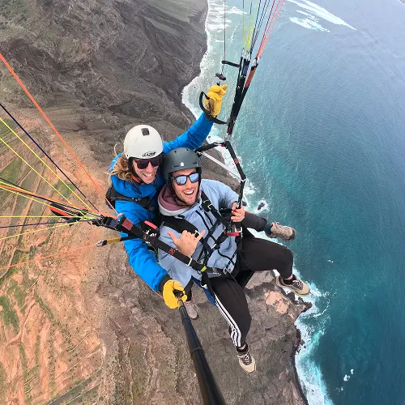
Sono un pilota francese che ha trascorso gli ultimi sette anni facendo ciò che ama di più: stare in aria. Sono un pilota biposto certificato a livello internazionale e appassionato nel condividere la magia del volo libero. Dal mio primo volo, sono rimasto affascinato dall'incredibile sensazione di libertà che si prova volando. Il volo biposto mi permette di condividere questa esperienza con te e di assicurarmi che il tuo volo sia sicuro, divertente e davvero indimenticabile.
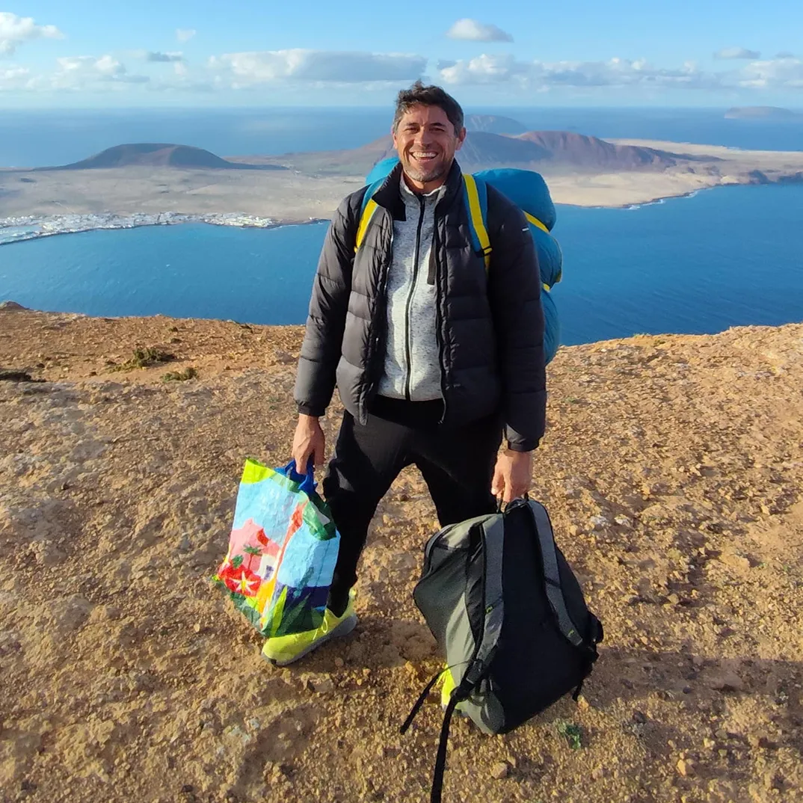
Gustavo è il nostro gaucho argentino della Patagonia. Con il suo buon umore costante, le sue competenze multilingue e il suo talento eccezionale sia come assistente che come musicista, porta uno spirito unico nel nostro team.
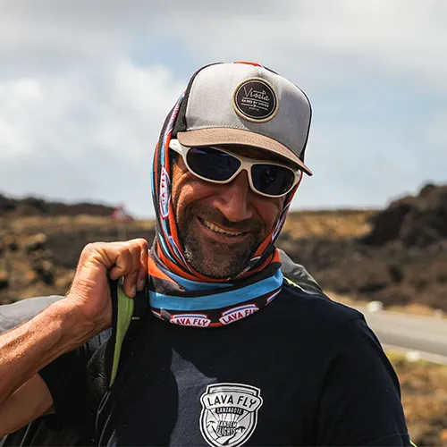
Il miglior uomo. Sandro è uno dei migliori istruttori di surf da più di 15 anni. Aiuta il team LavaFly da 5 anni e sta lentamente scoprendo il volo da solo.
Compleanni Matrimoni Onomastici Anniversari Se stai cercando un buono regalo, contattaci!
Vivrai un'esperienza indimenticabile
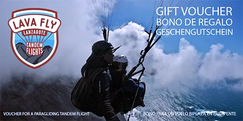
CONTATTACI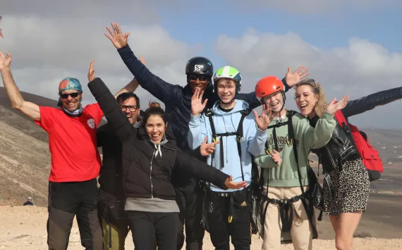
I nostri voucher sono trasferibili e possono essere facilmente condivisi con amici o familiari. In caso di cancellazione, si applica una commissione di elaborazione del 30 %.
Le Isole Canarie offrono le migliori condizioni per il parapendio in tandem.
La vista del paesaggio naturale di Lanzarote è impressionante. C'è molta biodiversità: dalla terra nera
della lava, alla vegetazione, case bianche e spiagge sabbiose. Visto dall'alto è un'avventura
indimenticabile.
I nostri piloti hanno più di vent'anni di esperienza di volo.
Il nostro obiettivo è darti una nuova prospettiva del mondo attraverso il parapendio in tandem.
Ogni passeggero sarà seguito scrupolosamente per garantire la massima sicurezza e il massimo divertimento.
Cerchi un'avventura indimenticabile? Vuoi fare un regalo speciale a qualcuno? Ebbene cosa stai aspettando,
contatta subito Lava Fly.
La selezione delle singole aree di volo dipende esclusivamente dalla direzione del vento!
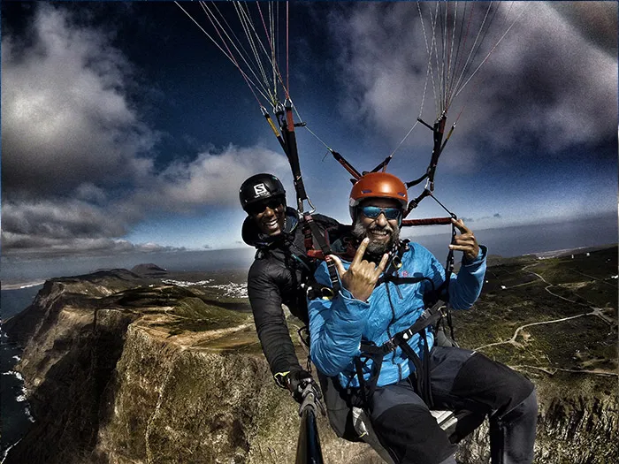
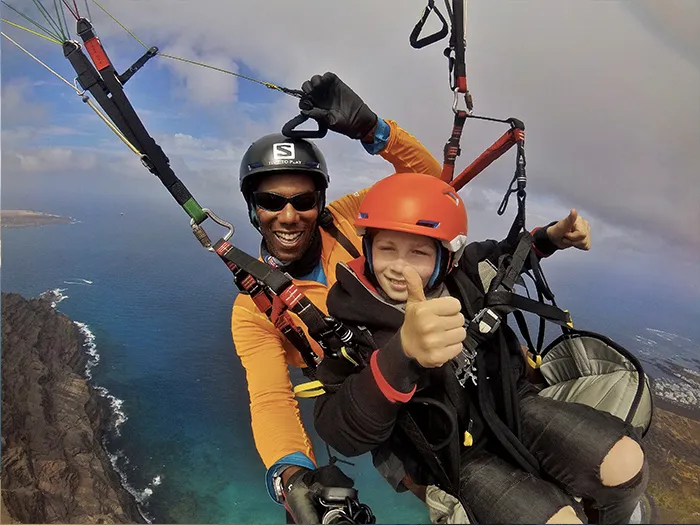
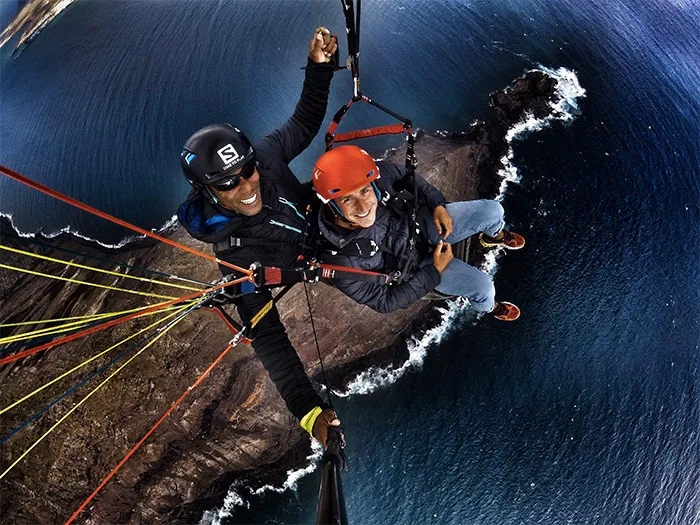
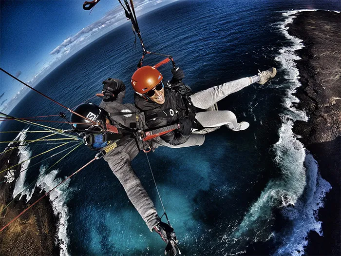
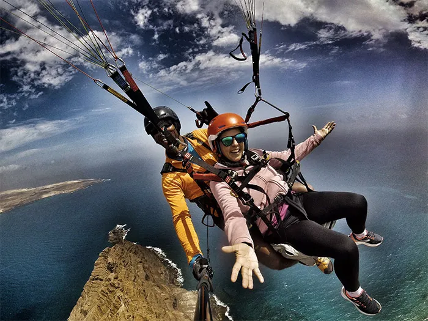
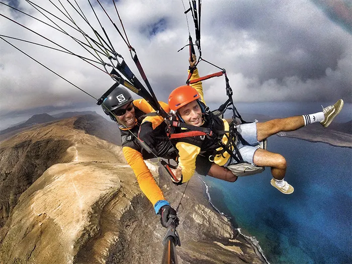
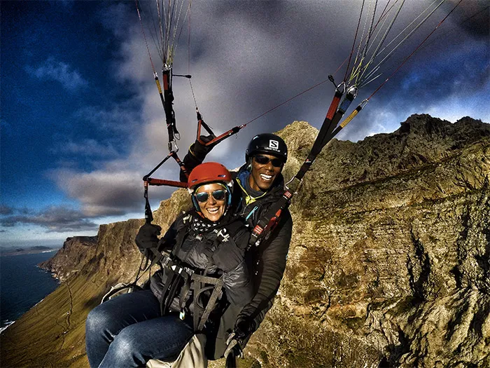
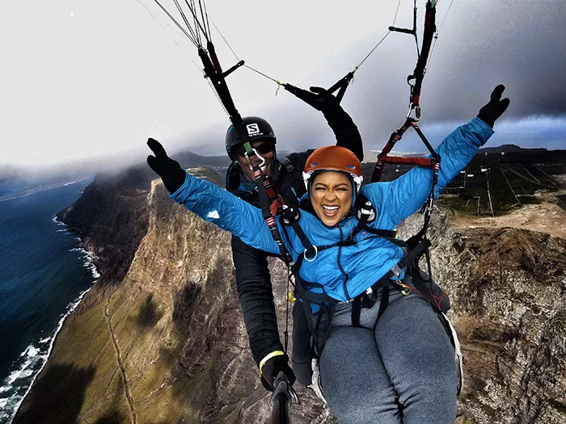
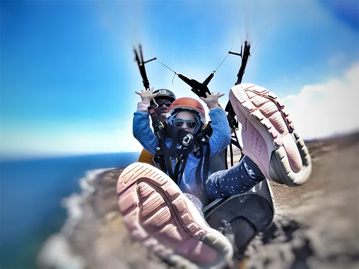

Sei nuovo sull'isola o ti fermi per una vacanza prolungata? Attraverso la nostra associazione partner, puoi incontrare nuove persone, creare connessioni e trovare supporto sociale.

LavaFly Lanzarote è ora presente anche nella guida turistica ufficiale KAYAK per Teguise / Lanzarote.
ING Boats è la tua scelta ideale a La Graciosa per tour in barca e in bici. Non serve patente, solo pura avventura sull’isola. Naviga verso calette nascoste in barca o esplora il paesaggio selvaggio in bicicletta: un modo autentico e divertente per scoprire l’isola.
Presentiamo *KALAKAI* come un autentico rifugio per viaggiatori consapevoli, immerso nella natura e lontano dalla folla. Questo campo incarna uno stile di vita sostenibile con stile: surf, yoga, escursioni e laboratori locali si uniscono per offrire un’esperienza rilassata dal vero spirito di Lanzarote. Un partner che condivide al 100% i nostri valori.
Scopri di più sulla cultura, la natura e le esperienze uniche di Lanzarote su *VisitLanzarote*, il portale turistico ufficiale dell’isola. Organizza il tuo soggiorno, esplora le attività e trova gemme nascoste, tutto in un unico posto.
SmyleSurf è una scuola di surf giovane e appassionata con sede a Famara, Lanzarote. Ci distinguiamo per il nostro approccio personale e la nostra filosofia positiva. Offriamo lezioni di gruppo ristrette o lezioni private per aiutarti a progredire più velocemente e surfare con sicurezza. Con un coaching individuale otterrai risultati migliori e ti divertirai di più in acqua fin dal primo giorno.
*BodyKinetik* offre massaggi professionali, recupero sportivo e trattamenti per il benessere a Lanzarote — perfetto per viaggiatori attivi o per chi cerca un profondo rilassamento. Che tu abbia bisogno di ricaricarti dopo un’escursione o di liberarti dallo stress, le nostre terapie personalizzate ti aiuteranno a sentirti al meglio. Prenota la tua sessione e scopri il potere curativo del tocco in un ambiente tranquillo sull’isola.
Esperienze in acqua che ti sostengono affinché tu possa lasciarti andare. Senti come l’acqua ti culla, ti massaggia e ti invita dolcemente a rilassarti e ad arrenderti. Molti partecipanti a queste sessioni affrontano stress, ansia, stanchezza, problemi di sonno o sovraccarico emotivo. Altri arrivano alla ricerca di chiarezza, guarigione o semplicemente di una connessione più profonda con sé stessi.
Per prima cosa abbiamo bisogno di conoscere il nome completo e l'orario di volo del destinatario. Non appena avremo queste informazioni, vi invieremo il buono regalo per un volo tandem in parapendio in formato PDF. Il buono può essere pagato tramite Paypal, Revolut, Bizum o carta di credito.
Il luogo di incontro dipende dalle condizioni meteorologiche. Il nostro team ne discuterà con voi in anticipo. Tuttavia, potrebbero esserci dei cambiamenti se le condizioni meteorologiche cambiano.
I luoghi di decollo dipendono dalle condizioni meteorologiche e possono essere modificati dai nostri piloti in qualsiasi momento.
Normalmente si atterra nello stesso punto in cui si è decollati, ma la zona di atterraggio dipende anche dal vento e dalle maree del giorno. Al pilota spetta sempre il giudizio finale sull'atterraggio più sicuro in base alle condizioni di volo.
Sì, tutti i nostri piloti sono piloti tandem certificati dal loro ente certificatore nazionale e hanno molti anni di esperienza.
Consigliamo di indossare calzature con cui si possono fare facilmente alcuni passi (e che non cadranno una volta in volo), una giacca a vento calda, una bottiglietta d'acqua e magari una protezione solare. Tutte le altre attrezzature per il parapendio sono fornite da noi.
È meglio lasciare le borse più grandi all'alloggio o in un luogo sicuro o in macchina. Nell'imbrago c'è uno scomparto per piccole borse e zaini da giorno, ma preferiamo che veniate con il minor numero possibile di bagagli.
Chiunque è il benvenuto!
Offriamo prezzi per gruppi di almeno 6 persone. Contattateci per conoscere i prezzi di gruppo.
È possibile pagare tramite Paypal, Revolut, Bizum, carta o carta di credito. È possibile pagare subito dopo la prenotazione o dopo il volo tandem in parapendio.